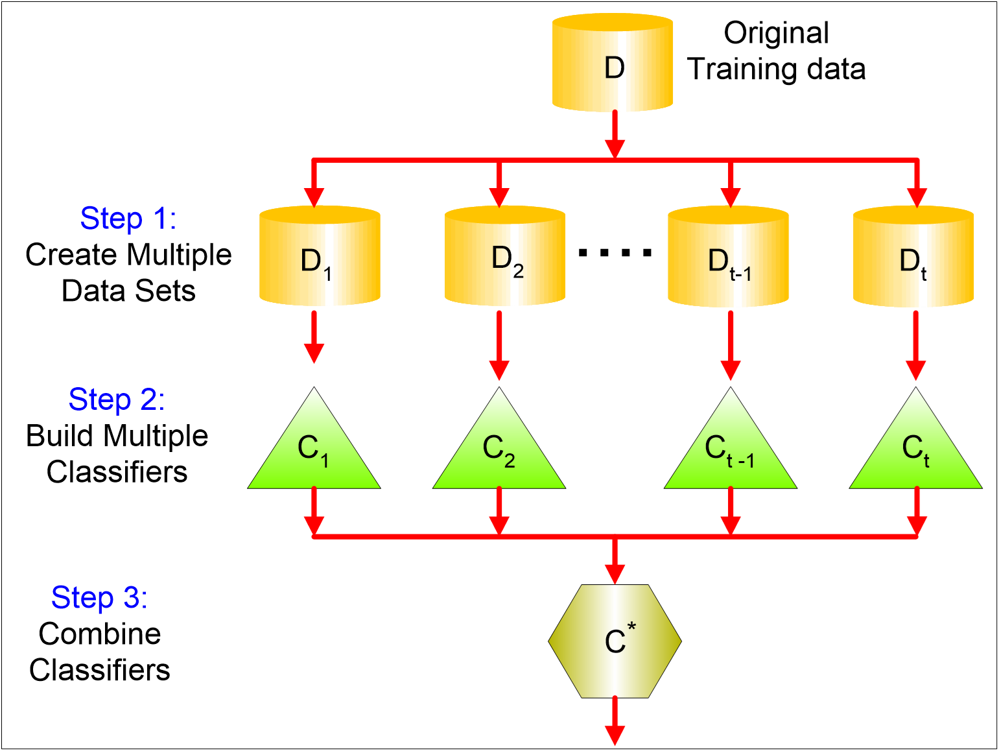
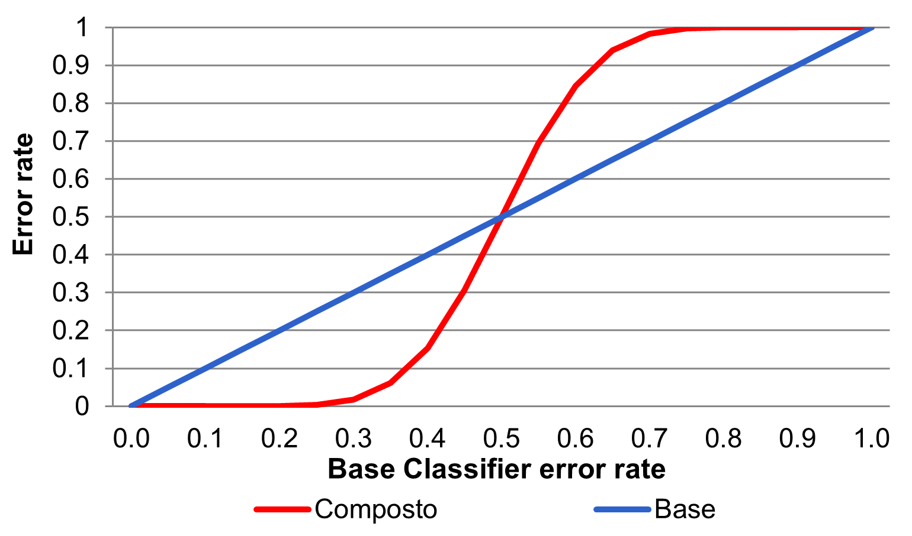
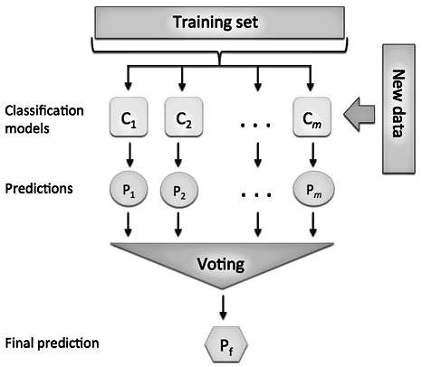
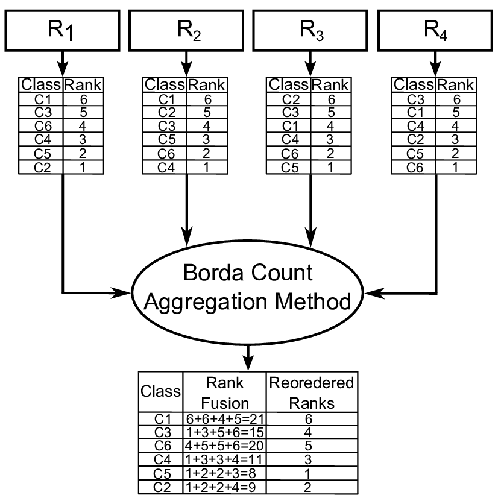
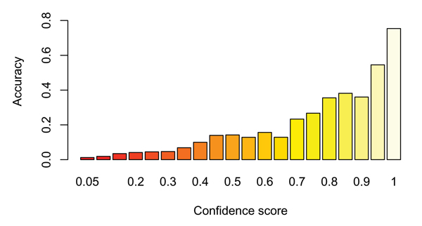
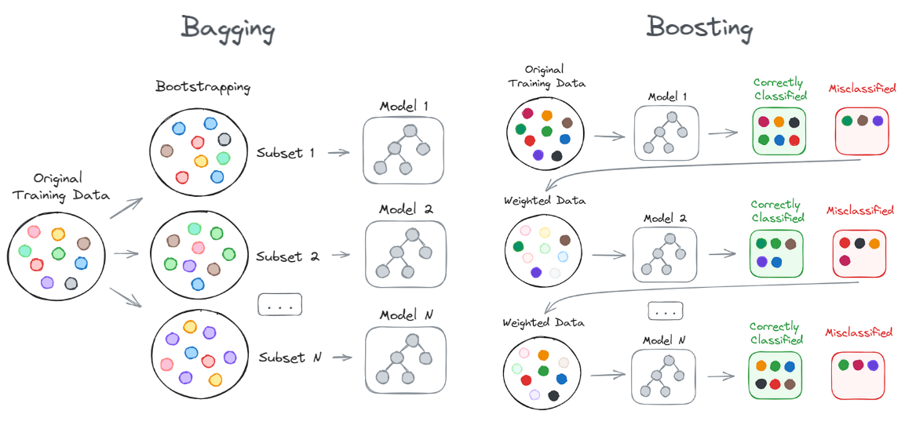
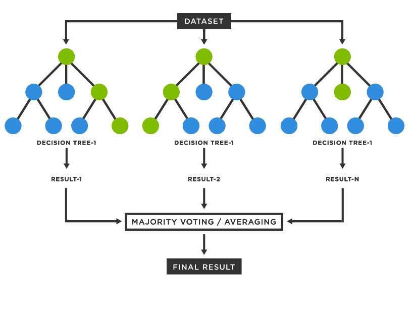
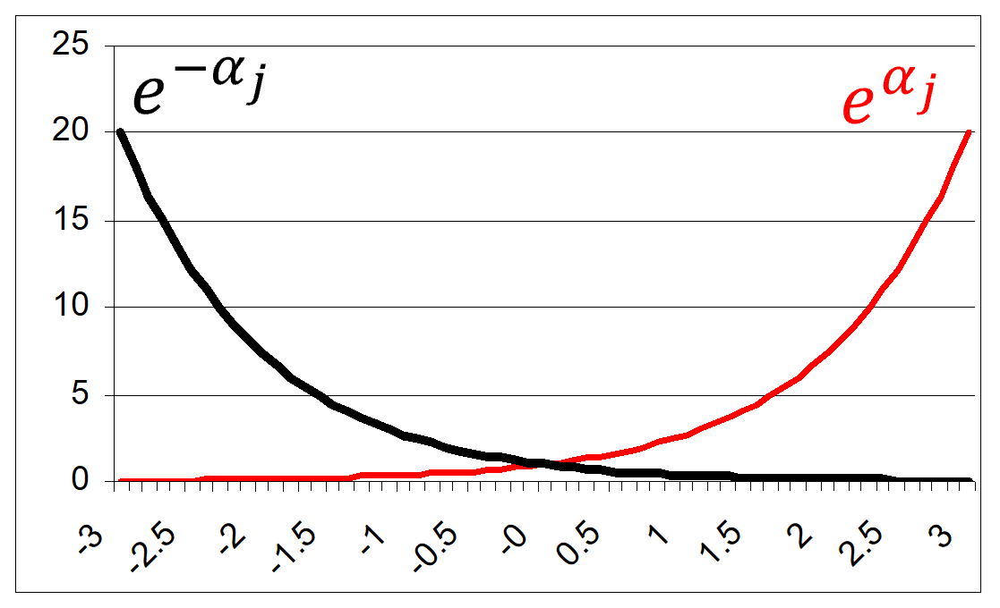

flowchart LR
X["record x"] --> C1["C1: yes"]
X --> C2["C2: no"]
X --> C3["C3: yes"]
C1 --> V["vote"]
C2 --> V
C3 --> V
V --> Y["ensemble: yes"]
style Y fill:#a3f7a3,stroke:#000
Ensemble Classifiers
By the end of this lecture, you will be able to:
An ensemble classifier combines the predictions of several base classifiers.
The central idea is simple:

Ensemble
If all classifiers make the same errors, voting repeats the same mistake.
An ensemble becomes useful when its members are both:
Ensembles can be organized in different ways:
In practice, real independence is difficult to obtain, but partial diversity can still improve performance.
Suppose we have 25 independent classifiers.
\[ P(error)=\sum_{i=13}^{25} {25 \choose i}\epsilon^i(1-\epsilon)^{25-i} \]
For \(\epsilon=0.35\), this is approximately \(0.06\): much smaller than the individual error.

In decision-level fusion, each classifier outputs a class decision.
The ensemble then combines these decisions.
Common rules:
The selected class is the one with the highest final score.

For classification, the final prediction is commonly obtained by voting.
flowchart LR
X["record x"] --> C1["C1: yes"]
X --> C2["C2: no"]
X --> C3["C3: yes"]
C1 --> V["vote"]
C2 --> V
C3 --> V
V --> Y["ensemble: yes"]
style Y fill:#a3f7a3,stroke:#000
The ensemble assigns the class voted by most classifiers.
Class membership can be decided by a voting mechanism.
Example:
With reliability-weighted voting, the record should be assigned to class \(Y\).
The Borda count is useful when classifiers produce a ranking of classes rather than a single class.
This is still a decision-level method: it merges symbolic decisions or rankings, not calibrated probabilities.

Borda count
In confidence-level fusion, each classifier outputs one confidence value per class.
These values can be merged through different functions:
The sum is often more robust than the product. Why?

Confidence score
There are several ways to build diversity among classifiers.
Changing the training set
Changing the attributes
Changing the learning algorithm or its parameters
Another way to build an ensemble is to transform a multi-class problem into several binary problems.
This idea appears in Error-Correcting Output Coding.
The final class is the one with the highest accumulated score.
Prediction error can be discussed through three components.
Different ensemble strategies target different parts of the problem.
Different classifiers have different abilities to model decision boundaries.
For example:

Both methods combine multiple models, but they create diversity in different ways.
Bagging means bootstrap aggregating Breiman (1996).
It builds many classifiers by repeatedly sampling the training set with replacement.
flowchart LR
D["training set D"] --> B1["bootstrap sample D1"]
D --> B2["bootstrap sample D2"]
D --> B3["bootstrap sample D3"]
B1 --> C1["train C1"]
B2 --> C2["train C2"]
B3 --> C3["train C3"]
C1 --> V["majority vote"]
C2 --> V
C3 --> V
V --> Y["prediction"]
Given a training set \(D\) with \(N\) records, each bagging round creates a new dataset \(D_j\):
For large \(N\), a bootstrap sample contains about \(63.2\%\) of the distinct original records:
\[ 1-\left(1-\frac{1}{N}\right)^N \approx 1-e^{-1}=0.632 \]
For \(j=1,\dots,T\):
For a new record \(\boldsymbol{x}\):
\[ C^*(\boldsymbol{x})=\arg\max_y \sum_{j=1}^{T} I(C_j(\boldsymbol{x})=y) \]
where \(I(\cdot)\) is 1 when the condition is true and 0 otherwise.
Consider a one-level binary decision tree, also called a decision stump.
It can only make rules such as:
\[ x \le s \rightarrow -1,\qquad x>s \rightarrow +1 \]
where \(s\) is the split point.
| \(x\) | 0.1 | 0.2 | 0.3 | 0.4 | 0.5 | 0.6 | 0.7 | 0.8 | 0.9 | 1.0 |
|---|---|---|---|---|---|---|---|---|---|---|
| \(y\) | +1 | +1 | +1 | -1 | -1 | -1 | -1 | +1 | +1 | +1 |
A single stump cannot perfectly model this pattern.
With bootstrap samples, different stumps may choose different split points.
Some samples emphasize the left boundary:
\[ x \le 0.3 \rightarrow +1,\qquad x>0.3 \rightarrow -1 \]
Other samples emphasize the right boundary:
\[ x \le 0.7 \rightarrow -1,\qquad x>0.7 \rightarrow +1 \]
The ensemble vote can approximate a more expressive classifier than one stump alone.
Bagging is useful when the base learner is unstable.
An unstable learner changes its decision boundary noticeably when the training set changes slightly.
Typical examples:
Bagging is less useful for very stable models, because bootstrap samples produce very similar classifiers.
A random forest is a bagging ensemble of decision trees (Breiman 2001).
It introduces randomness in two places:
This second mechanism prevents all trees from repeatedly choosing the same dominant feature.
Typical choice for classification:
\[ d' \approx \sqrt{d} \]
where \(d\) is the number of features and \(d'\) is the number considered at each split.

Boosting builds classifiers sequentially.
Each new classifier focuses more strongly on the records that previous classifiers handled badly.
flowchart LR
D1["weighted data"] --> C1["train C1"]
C1 --> U1["increase weight of mistakes"]
U1 --> C2["train C2"]
C2 --> U2["increase weight of mistakes"]
U2 --> C3["train C3"]
C1 --> V["weighted vote"]
C2 --> V
C3 --> V
V --> Y["prediction"]
Unlike bagging, boosting classifiers are not independent: each round depends on the previous one.
| Aspect | Bagging | Boosting |
|---|---|---|
| Training | Parallel | Sequential |
| Data distribution | Bootstrap samples | Reweighted records |
| Main goal | Reduce variance | Improve weak learners |
| Combination | Usually equal vote | Weighted vote |
| Sensitivity | Robust to noise | Can emphasize noisy records |
Boosting starts from a weak learner.
A weak learner is not required to be highly accurate. It only needs to perform slightly better than random guessing.
For binary classification:
\[ \epsilon_j < 0.5 \]
AdaBoost turns a sequence of weak classifiers into a strong classifier by:
Freund and Schapire introduced AdaBoost as an adaptive boosting method that does not need prior knowledge of the weak learner’s accuracy Freund and Schapire (1997).
The paper connects boosting to a broader decision-theoretic setting.
Key idea:
Training set:
\[ D=\{(\boldsymbol{x}_1,y_1),\dots,(\boldsymbol{x}_N,y_N)\} \]
For binary classification:
\[ y_i \in \{-1,+1\} \]
At round \(j\):
The weighted error of classifier \(C_j\) is:
\[ \epsilon_j=\sum_{i=1}^{N} w_i^{(j)} I(C_j(\boldsymbol{x}_i)\ne y_i) \]
Interpretation:
The weights satisfy:
\[ \sum_{i=1}^{N} w_i^{(j)}=1 \]
AdaBoost assigns classifier \(C_j\) the weight:
\[ \alpha_j=\frac{1}{2}\ln\left(\frac{1-\epsilon_j}{\epsilon_j}\right) \]
If \(\epsilon_j\) is small, \(\alpha_j\) is large.
If \(\epsilon_j=0.5\), then \(\alpha_j=0\).
If \(\epsilon_j>0.5\), the classifier is worse than random guessing and should not help the vote.
After round \(j\), AdaBoost updates record weights as:
\[ w_i^{(j+1)}=\frac{w_i^{(j)}\exp(-\alpha_j y_i C_j(\boldsymbol{x}_i))}{Z_j} \]
where \(Z_j\) normalizes the weights so they sum to 1.
For binary labels:

The final prediction is a weighted vote:
\[ C^*(\boldsymbol{x})=\operatorname{sign}\left(\sum_{j=1}^{T}\alpha_j C_j(\boldsymbol{x})\right) \]
Each classifier contributes according to its reliability.
The process is adaptive because each round changes the learning problem faced by the next classifier.
Initialize weights w_i = 1/N for i = 1, ..., N
for j = 1, ..., T:
Train classifier C_j on the weighted training set
Compute weighted error epsilon_j
if epsilon_j >= 0.5:
stop or discard the classifier
else:
alpha_j = 1/2 * ln((1 - epsilon_j) / epsilon_j)
Increase the weights of misclassified records
Decrease the weights of correctly classified records
Normalize weights so that their sum is 1
Return the weighted vote of C_1, ..., C_TThe condition \(\epsilon_j<0.5\) is important: each base classifier must be better than random guessing.
Suppose a weak classifier has weighted error:
\[ \epsilon_1=0.20 \]
Then:
\[ \alpha_1=\frac{1}{2}\ln\left(\frac{0.80}{0.20}\right)=\frac{1}{2}\ln(4)\approx0.693 \]
Correctly classified records are multiplied by \(e^{-0.693}=0.50\).
Misclassified records are multiplied by \(e^{0.693}=2.00\).
After normalization, the next round pays more attention to the mistakes.
AdaBoost is often introduced with decision stumps.
Using the same dataset:
| \(x\) | 0.1 | 0.2 | 0.3 | 0.4 | 0.5 | 0.6 | 0.7 | 0.8 | 0.9 | 1.0 |
|---|---|---|---|---|---|---|---|---|---|---|
| \(y\) | +1 | +1 | +1 | -1 | -1 | -1 | -1 | +1 | +1 | +1 |
Each stump is simple, but the weights make later stumps focus on the regions earlier stumps misclassified.
After several rounds, the weighted combination can behave like a deeper tree.
Boosting can be viewed as repeatedly correcting the current decision boundary.
flowchart TD
A["simple rule"] --> B["errors receive higher weight"]
B --> C["new rule focuses on hard region"]
C --> D["weighted combination of rules"]
D --> E["stronger boundary"]
style E fill:#a3f7a3,stroke:#000
Boosting is powerful, but it is not magic.
Be careful when:
Validation data should be used to tune:
Ensembles improve classification by combining multiple predictors.
The key question is always the same:
How do we create useful diversity among classifiers?
Matteo Francia - Machine Learning and Data Mining (Module I) - A.Y. 2026/27